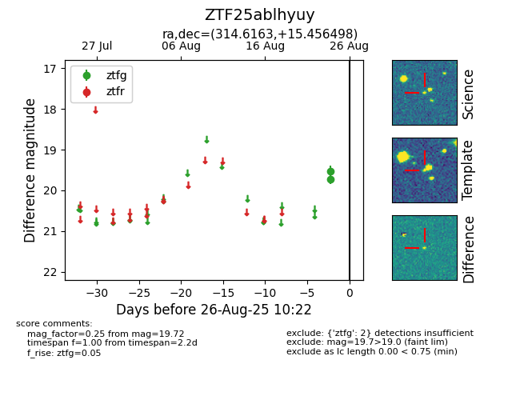

Target ZTF25ablhyuy at 2025-08-26 11:30, see:
FINK: fink-portal.org/ZTF25ablhyuy
Lasair: lasair-ztf.lsst.ac.uk/objects/ZTF25ablhyuy
ALeRCE: alerce.online/object/ZTF25ablhyuy
alt names
ZTF25ablhyuy (ztf,fink)
coordinates:
equatorial (ra, dec) = (314.6163,+15.45650)
galactic (l, b) = (62.6869,-19.26577)
photometry
last atlaso=18.89, ztfg=19.72
1 atlaso, 2 ztfg detections
